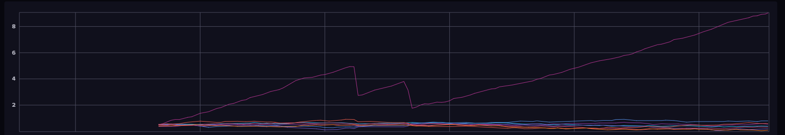
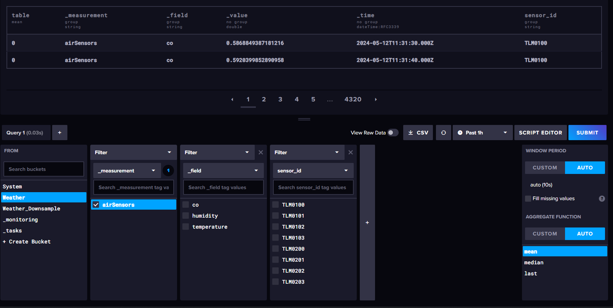
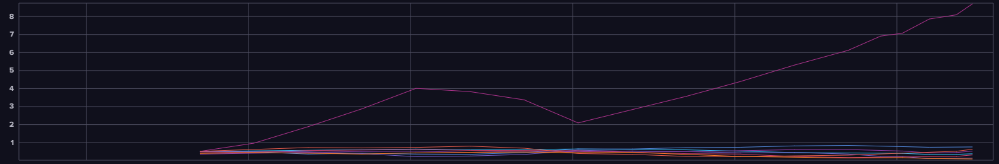
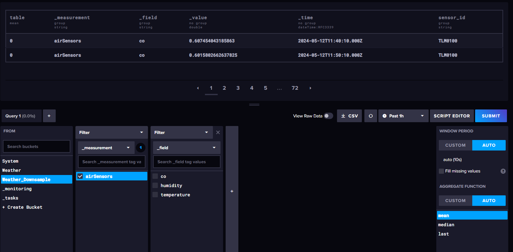

Die Task-Engine führt Flux-Skripte gemäß einem festgelegtem Zeitplan aus. Einer der häufigsten Anwendungsfälle für InfluxDB-Tasks besteht darin, Daten zu reduzieren (downsampling), um die Speichernutzung zu reduzieren, während Daten im Laufe der Zeit gesammelt werden.
Beispiel:
Gehen wir davon aus wir möchten in unserem "Weather" Bucket das Measurement "airSensors" längerfristig archivieren und dabei unsere Speichernutzung reduzieren.
Wir erstellen als erstes einen neuen Taks und geben als erstes an, nach welchem Intervall das Script ausgeführt werden soll.
Wie man sieht, haben unsere airSensoren in der letzten Stunde 8640 Datensätze produziert.
 Nach dem wir unser Tasks ausgeführt haben sich unsere Datensätze auf 144 reduziert.
 